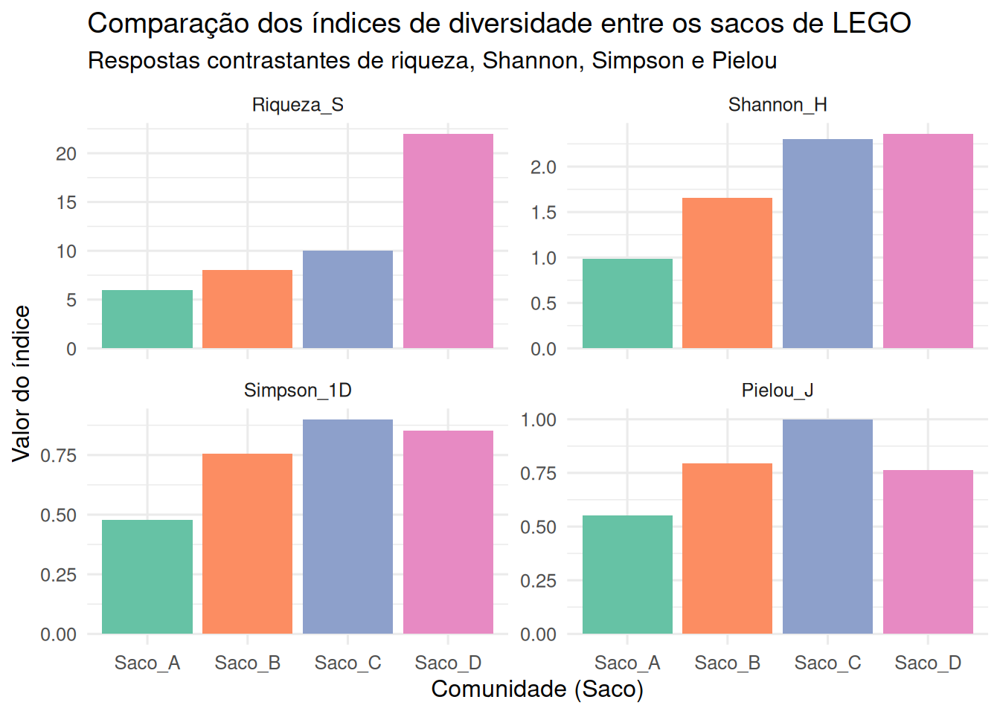

Módulo 2- Medidas clássicas de diversidade em ecologia de comunidades
Análise prática de Shannon, Simpson e Pielou
1 Apresentação do módulo
Neste segundo módulo, continuamos utilizando a simulação tátil com 100 peças de LEGO por grupo como modelo de comunidades biológicas. No Módulo 1, exploramos a riqueza de espécies (\(S\)), as distribuições de abundância relativa (SADs/RADs) e a amostragem sequencial. Agora, estendemos nossa análise para quantificar a diversidade alfa (\(\alpha\)) por meio dos três índices clássicos mais difundidos na ecologia:
Índice de Shannon-Wiener (\(H'\)): fundamentado na teoria da informação.
Índice de Simpson (\(D\), \(1-D\), \(1/D\)): fundamentado na probabilidade de intersubjetividade e dominância.
Equitabilidade de Pielou (\(J'\)): proporção da diversidade máxima teórica.
1.1 Definições do modelo no Módulo 2
Espécie = Cor da peça de LEGO (por exemplo: peça vermelha = Espécie A, amarela = Espécie B).
Indivíduo = Cada peça física de LEGO.
Forma e tamanho das peças: mantêm-se desconsiderados neste módulo (serão incorporados como traços funcionais no Módulo 3).
2 Demonstrativo prático de sala (Hands-on)
Cada grupo de alunos utilizará o seu saco de 100 peças montado previamente para realizar o protocolo de organização e estimativa da incerteza e da dominância antes de iniciar o processamento dos dados no R.
3 Exercício aplicado no R (vegan)
3.1 Carregamento de pacotes e simulação dos sacos de LEGO
Vamos simular as contagens de 100 peças para quatro sacos de LEGO com estruturas ecológicas contrastantes: * Saco A (Hiperdominante): 1 cor dominante com 70% das peças e poucas espécies raras (\(S = 6\)). * Saco B (Dominância moderada / Log-normal): padrão intermediário típico da natureza (\(S = 8\)). * Saco C (Equitativo / Uniforme): 10 cores com exatamente 10 peças cada (\(S = 10\)). * Saco D (Alta riqueza com muitas espécies raras): 22 cores com predomínio de espécies representadas por 1 ou 2 peças (\(S = 22\)).
Code
library(vegan)library(tidyverse)# Construção da lista de contagens das 100 peças por cor para cada sacocomunidades_list <-list(Saco_A =c(Vermelho =70, Amarelo =15, Azul =8, Verde =4, Branco =2, Preto =1),Saco_B =c(Vermelho =40, Amarelo =22, Azul =14, Verde =10, Branco =6, Preto =4, Laranja =3, Cinza =1),Saco_C =c(Vermelho =10, Amarelo =10, Azul =10, Verde =10, Branco =10, Preto =10, Laranja =10, Cinza =10, Roxo =10, Rosa =10),Saco_D =c(Vermelho =30, Amarelo =18, Azul =12, Verde =8, Branco =6,Preto =4, Laranja =3, Cinza =3, Roxo =2, Rosa =2,Marrom =2, Ciano =1, Magenta =1, Lime =1, Bege =1,Vinho =1, Turquesa =1, Ouro =1, Prata =1, Bronze =1, Coral =1, Salmao =1))# Conversão da lista para matriz ecológica (locais nas linhas, espécies nas colunas)matriz_lego <-bind_rows(comunidades_list, .id ="Comunidade") %>%mutate(across(everything(), ~replace_na(.x, 0)))# Exibição da estrutura da matrizprint(matriz_lego)
Utilizaremos as funções do pacote vegan para extrair a riqueza observada (\(S\)), o índice de Shannon-Wiener (\(H'\)), a dominância de Simpson (\(D\)), a diversidade de Simpson (\(1-D\)), o inverso de Simpson (\(1/D\)) e a equitabilidade de Pielou (\(J'\)).
Code
# Isolamento da matriz numérica de contagensmat_num <- matriz_lego %>%select(-Comunidade)rownames(mat_num) <- matriz_lego$Comunidade# 1. Riqueza observada (S)S_obs <-specnumber(mat_num)# 2. Índice de Shannon-Wiener (H')H_shannon <-diversity(mat_num, index ="shannon")# 3. Dominância de Simpson (D)D_puro <-rowSums((mat_num /rowSums(mat_num))^2)# 4. Diversidade de Simpson (1 - D)Simp_div <-1- D_puro# 5. Inverso de Simpson (1 / D)Simp_inv <-1/ D_puro# 6. Diversidade máxima teórica de Shannon (H_max = ln(S))H_max <-log(S_obs)# 7. Equitabilidade de Pielou (J' = H' / ln(S))J_pielou <- H_shannon / H_max# Consolidação da tabela de resultadostabela_diversidade <-data.frame(Comunidade =rownames(mat_num),N_Total =rowSums(mat_num),Riqueza_S = S_obs,Shannon_H =round(H_shannon, 3),Simpson_D =round(D_puro, 3),Simpson_1D =round(Simp_div, 3),Simpson_Inv =round(Simp_inv, 2),Pielou_J =round(J_pielou, 3))knitr::kable(tabela_diversidade, caption ="Tabela comparativa dos índices clássicos de diversidade entre os 4 sacos de LEGO")
Tabela comparativa dos índices clássicos de diversidade entre os 4 sacos de LEGO
Comunidade
N_Total
Riqueza_S
Shannon_H
Simpson_D
Simpson_1D
Simpson_Inv
Pielou_J
Saco_A
Saco_A
100
6
0.989
0.521
0.479
1.92
0.552
Saco_B
Saco_B
100
8
1.654
0.244
0.756
4.10
0.795
Saco_C
Saco_C
100
10
2.303
0.100
0.900
10.00
1.000
Saco_D
Saco_D
101
22
2.362
0.149
0.851
6.69
0.764
3.3 Visualização gráfica dos índices comparados
Para visualizar como cada índice reage às diferentes estruturas de comunidade, construímos um gráfico comparativo utilizando o pacote ggplot2.
Code
# Reorganização dos dados para formato longo (tidy)df_grafico <- tabela_diversidade %>%pivot_longer(cols =c("Riqueza_S", "Shannon_H", "Simpson_1D", "Pielou_J"),names_to ="Indice",values_to ="Valor" ) %>%mutate(Indice =factor(Indice, levels =c("Riqueza_S", "Shannon_H", "Simpson_1D", "Pielou_J")))# Gráfico de barras facetadoggplot(df_grafico, aes(x = Comunidade, y = Valor, fill = Comunidade)) +geom_col(show.legend =FALSE) +facet_wrap(~ Indice, scales ="free_y", ncol =2) +scale_fill_brewer(palette ="Set2") +theme_minimal(base_size =12) +labs(title ="Comparação dos índices de diversidade entre os sacos de LEGO",subtitle ="Respostas contrastantes de riqueza, Shannon, Simpson e Pielou",x ="Comunidade (Saco)",y ="Valor do índice" )

Aqui está o bloco formatado em Quarto Markdown (.qmd) com o layout estruturado (incluindo o callout visual do Quarto, caixa baixa nos cabeçalhos e negritos pontuais) para você utilizar diretamente no seu documento:
4 instruções para uso do próprio arquivo .csv no exercício
nesta etapa do exercício, você deixará de utilizar a matriz simulada e aplicará todas as análises aos dados reais coletados pelo seu grupo no módulo 1.
Note📋 orientações para análise dos dados do seu grupo
localização do arquivo .csv
certifique-se de que o arquivo contendo a contagem de peças por cor do seu grupo (por exemplo, dados_lego_grupo.csv) esteja salvo no mesmo diretório do seu projeto no rstudio. a tabela deve manter a estrutura padrão: colunas representando as espécies (cores) e a linha representando a amostragem da comunidade.
importação dos dados para o r
carregue a sua planilha no ambiente do r utilizando a função de leitura adequada (read.csv() ou read_csv() do pacote readr).
reaproveitamento dos códigos do exercício
você não precisa reescrever os scripts do zero. copie e cole os blocos de código demonstrativos deste módulo e adapte apenas o nome do objeto da matriz de entrada, substituindo mat_num pelo nome do seu objeto de dados importado.
cálculo e consolidação dos índices
execute os comandos do pacote vegan para extrair a riqueza observada (\(S\)), o índice de shannon-wiener (\(H’\)), o índice de simpson (\(1-D\) e \(1/D\)) e a equitabilidade de pielou (\(J’\)) da comunidade do seu grupo.
comparação e classificação do perfil ecológico
compare os resultados obtidos para o seu grupo com os quatro sacos de referência (sacos a, b, c e d). identifique se a sua comunidade se aproxima de um perfil de hiperdominância (saco a), distribuição log-normal típica (saco b), equitabilidade perfeita (saco c) ou com grande proporção de espécies raras (saco d).
5 Perguntas de interpretação ecológica
Responda às seguintes questões com base nos resultados quantitativos obtidos na tabela e nos gráficos acima:
Divergência entre Shannon e Simpson: Compare os resultados do Saco C (equitativo) e do Saco D (muitas espécies raras). Qual deles apresentou o maior valor de Shannon (\(H'\)) e qual apresentou o maior valor de Simpson (\(1-D\))? Explique por que esses dois índices ranquearam esses dois sacos de maneira diferente com base nas suas fórmulas matemáticas.
Sensibilidade à dominância: No Saco A, o valor de Shannon foi de \(H' = 1,027\), enquanto o valor de Simpson (\(1-D\)) foi de \(0,480\). O que a diferença na magnitude desses dois valores revela sobre a presença de espécies hiperdominantes na comunidade?
Interpretando a Equitabilidade de Pielou (\(J'\)): O Saco B possui riqueza \(S = 8\) e o Saco C possui riqueza \(S = 10\). Por que a equitabilidade de Pielou do Saco C é exatamente \(1,0\), enquanto a do Saco B é menor? O que o índice de Pielou mede que a riqueza pura não consegue detectar?
Inverso de Simpson (\(1/D\)) como “Número de espécies abundantes”: O valor do Inverso de Simpson para o Saco A foi próximo de \(1,92\), enquanto para o Saco C foi exatamente \(10,0\). Qual é a interpretação ecológica de expressar o índice de Simpson na sua forma inversa (\(1/D\))?
Aplicações e limitações em monitoramento ambiental: Imagine que uma área florestal nativa (semelhante ao Saco B) sofre uma perturbação e passa a ser dominada por uma espécie exótica invasora (tornando-se semelhante ao Saco A). Qual dos índices (\(H'\), \(1-D\) ou \(J'\)) seria mais rápido e sensível para alertar os gestores ambientais sobre essa perda de qualidade ecológica antes que ocorra a extinção de espécies raras? Justifique.